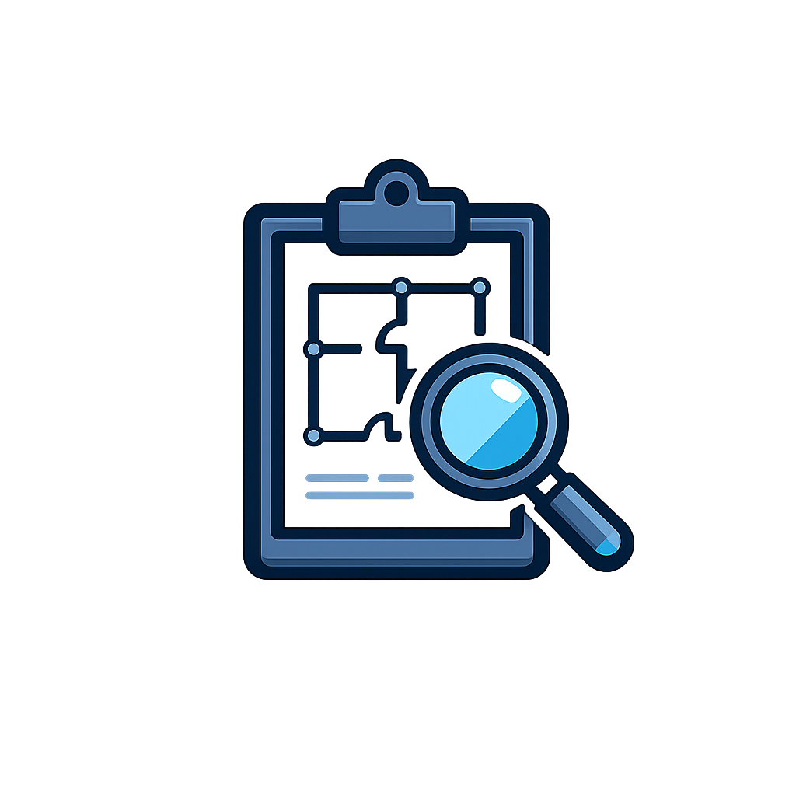

Commercial Security Assessments & System Planning
Practical commercial security assessments, existing system reviews, camera placement planning, access control planning, alarm coverage reviews, and expansion planning throughout New Mexico and the Four Corners region.

Call or Text: 505-331-7834
Email: joe@swsa.ai
Serving commercial properties throughout New Mexico and the Four Corners region.
Practical Commercial Security Assessments
Southwest Security & Automation helps commercial property owners and managers understand what security coverage they have, what may be missing, and what improvements make practical sense. The goal is not a complicated report. The goal is a clear plan that fits the property, the budget, and the way the site actually operates.
An assessment can be useful before a new installation, before an upgrade, after a property change, or when an existing system no longer feels aligned with day-to-day needs. We focus on cameras, access control, alarms, monitoring options, low-voltage planning, and future expansion.
Existing System Evaluations
-
 Existing System Reviews to look at cameras, alarms, access points, wiring, visibility, and practical system limitations
Existing System Reviews to look at cameras, alarms, access points, wiring, visibility, and practical system limitations
-

Site Walk-Throughs focused on how people, vehicles, customers, staff, deliveries, and vendors move through the property - System Planning to decide what should stay, what should be improved, and what can be planned for later
- Clear Next Steps so owners and managers understand realistic priorities before spending money on equipment
Camera Placement & Coverage Planning
Camera coverage works best when each camera has a reason to be there. We look at entrances, parking areas, exterior spaces, lobbies, counters, yards, loading zones, gates, blind spots, glare, lighting, mounting height, and network needs.
If the property needs new cameras or better views, we can connect the assessment to a practical commercial video surveillance plan that focuses on usable footage and clean installation.
Access Control & Entry Point Planning
Access control planning starts with doors, gates, staff areas, restricted spaces, public-to-private transitions, and daily routines. Not every door needs access control, and some areas may be better handled with cameras, alarms, keys, or operational changes.
When controlled entry makes sense, we can plan options around the property layout and connect the assessment to a focused commercial access control project.
Alarm Coverage Reviews
Alarm coverage should match the real risk areas of the property. We review entry points, glass areas, overhead doors, motion coverage, staff areas, storage rooms, after-hours traffic, and how alarms may fit with cameras or access control.
For properties that need intrusion detection or entry protection, we can use the assessment to plan a practical commercial alarm system without overbuilding the site.
Expansion, Upgrade & Multi-Site Planning
Many commercial properties do not need everything at once. A useful plan can identify what should be handled first, what can wait, and what wiring, network, or equipment choices may make future expansion easier.
For owners and managers with multiple locations, we can review common needs across sites and help prioritize improvements that support consistency without forcing every property into the same equipment list.
New Construction Security Planning
Security planning is often easier before walls are closed, ceilings are finished, or exterior work is complete. New construction and remodel projects can benefit from early conversations about camera views, conduit, low-voltage wiring, access-controlled doors, gate needs, alarm coverage, and remote visibility.
We keep this planning practical and installation-focused, so the security work supports the construction timeline and the way the finished property will be used.
Related Commercial Security Services
-
 Video Surveillance for camera coverage, remote visibility, alerts, and useful footage around key areas
Video Surveillance for camera coverage, remote visibility, alerts, and useful footage around key areas
-
 Access Control for doors, gates, staff areas, restricted spaces, and controlled entry points
Access Control for doors, gates, staff areas, restricted spaces, and controlled entry points
-
 Commercial Alarm Systems planned around entry points, motion coverage, glass areas, and after-hours needs
Commercial Alarm Systems planned around entry points, motion coverage, glass areas, and after-hours needs
-
 Remote Monitoring Options for after-hours visibility, alerts, monitoring options, and response planning where appropriate
Remote Monitoring Options for after-hours visibility, alerts, monitoring options, and response planning where appropriate
View Commercial Security Services
Contact
Call or Text: 505-331-7834
Email: joe@swsa.ai
Tell us what type of property you have, what systems are already in place, and whether you need an existing system review, camera placement planning, access control planning, alarm coverage review, remote monitoring options, or a broader commercial security plan.